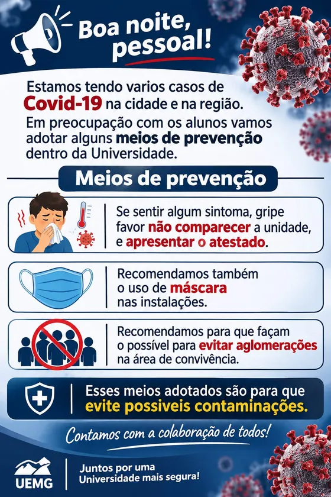
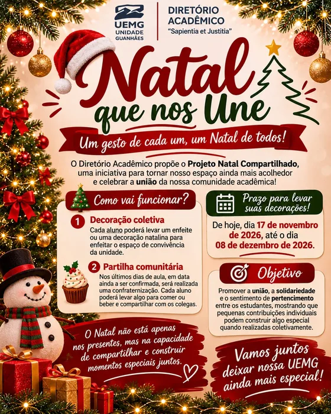

Diretório Acadêmico Sapientia et Justitia
A entidade que representa os estudantes da Unidade: é por ela que a voz dos estudantes chega à Unidade e a espaços de debate fora da universidade.

Prevenção à COVID-19 na Unidade
Diante do aumento dos casos de COVID-19 em Guanhães e na região, o Diretório Acadêmico, preocupado com a saúde e o bem-estar dos estudantes, reforça a importância de algumas medidas preventivas na Unidade.
- Com sintomas gripais Febre, tosse, coriza ou dor de garganta: não compareça à Unidade, procure atendimento médico e apresente o atestado, conforme as orientações acadêmicas.
- Máscara Recomenda-se o uso nas dependências da Universidade, especialmente em ambientes fechados.
- Aglomerações Sempre que possível, evite aglomerações na área de convivência.
- Higiene Mantenha as mãos higienizadas e adote os cuidados necessários para proteger a si e aos demais.
A prevenção é uma responsabilidade de todos. Cuidar de você também é cuidar de toda a comunidade acadêmica.
Atestado: com afastamento de menos de 7 dias, peça a justificativa de falta na Secretaria em até 48 horas do início do afastamento; se não puder ir, mande por e-mail dentro do prazo e leve o original depois. Ver nas perguntas frequentes

Natal que nos Une
Um gesto de cada um, um Natal de todos! O DA propõe deixar o espaço de convivência da Unidade mais acolhedor e celebrar a união da comunidade acadêmica.
- 1 · Decoração coletiva Cada estudante pode levar um enfeite ou uma decoração natalina para enfeitar o espaço de convivência da Unidade. O prazo vai de 17 de novembro até 08 de dezembro.O prazo para levar as decorações terminou em 08/12.
- 2 · Confraternização do DA No dia 08 de dezembro, durante o horário do intervalo, um momento de união, descontração e partilha entre a comunidade UEMG. Quem quiser participar pode levar algo para contribuir com a confraternização.Foi em 08/12, no horário do intervalo.
- Objetivo Promover a união, a solidariedade e o sentimento de pertencimento entre os estudantes: pequenas contribuições individuais constroem algo especial quando são feitas juntas.
- Realização Diretório Acadêmico Sapientia et Justitia
Vai à confraternização? O DA pede que cada participante confirme a presença no formulário, para organizar a partilha e saber quantos estudantes estarão presentes.
Envie a sua demanda ao DA
Solicitações, reclamações, sugestões e outras demandas dos estudantes agora têm um canal oficial: o e-mail ouvidoriadiretorioacademico2@gmail.com. Para formalizar, use o modelo de encaminhamento em PDF.
-
Baixe o modelo
É uma folha só, em PDF.
Baixar o modelo (PDF) -
Preencha com
- título da demanda;
- nome completo de quem faz a demanda;
- curso, período e turma;
- número de matrícula;
- descrição da solicitação;
- data e assinatura.
-
Envie por e-mail
Mande o formulário preenchido para o DA. Documentos, fotos ou outros registros que ajudem a explicar a situação podem ir junto.
Escrever para o DA
Para que serve
Para organizar o recebimento das manifestações, analisar melhor cada situação e garantir que cada demanda fique registrada e, quando for preciso, seja encaminhada aos setores da Universidade.
Bom saber
Preencha com informações verdadeiras e claras, com detalhes da situação e dos envolvidos sempre que possível. O envio não significa que o pedido foi aceito, mas garante que ele seja recebido e analisado.
O DA é o instrumento de representação estudantil e está à disposição para ouvir, acolher e buscar soluções para as demandas coletivas e individuais. Uma representação estudantil forte começa com a participação de todos.
Direito e Engenharia Civil, juntos
-
Direito
Voz, justiça e transformaçãoUma formação que transforma conhecimento em impacto social.
-
Engenharia Civil
Planejando, projetando e construindo o futuroUm curso que transforma conhecimento em soluções para a sociedade.
Conheça a Diretoria
Os estudantes que estão construindo o Diretório Acadêmico. Procure por eles na Unidade com ideias, dúvidas e sugestões.
-
Presidência
Rian Victor Felício da Silva
Direito, 7º período
-
Vice-Presidência
Nome a confirmar
Curso e período a confirmar
-
Secretariado-Geral
Nome a confirmar
Curso e período a confirmar
-
Tesouraria
Nome a confirmar
Curso e período a confirmar
-
Coordenação Executiva e de Assuntos Acadêmicos
Nome a confirmar
Curso e período a confirmar
-
Coordenação de Comunicação Institucional e Assuntos Sociais
Nome a confirmar
Curso e período a confirmar
Próximas ações do DA
O que o DA tem feito
-
Prevenção à COVID-19 na Unidade
Diante do aumento dos casos na cidade e na região, o DA reforçou as medidas de prevenção: ficar em casa com sintomas gripais, máscara em ambientes fechados, evitar aglomerações e higienizar as mãos.
-
Natal que nos Une: Projeto Natal Compartilhado
Decoração coletiva do espaço de convivência, com enfeites levados pelos estudantes até 08/12, e a confraternização do DA em 08/12, no horário do intervalo.
-
1ª Mostra de Profissões da UEMG Unidade Guanhães
Apresentação dos cursos de Direito e Engenharia Civil, das áreas de atuação e de atividades práticas, com chamada de estudantes voluntários.
-
Assembleia Geral aprova o Estatuto Social
Assembleia no Auditório da Unidade, aberta a todos os estudantes, com apresentação, discussão e votação. O Estatuto Social do DA foi aprovado.
-
Audiência Pública sobre o Plano Diretor de Guanhães
O Diretório Acadêmico levou 15 alunos da Unidade, com participação certificada, à audiência sobre o Plano Diretor do Município.
-
Primeira convocação da Assembleia Geral
Primeira convocação dos estudantes para a apresentação e a discussão do Estatuto Social do Diretório Acadêmico.
Avise a sua turma
Mande a página do DA no grupo da turma: o Estatuto, como a entidade se organiza e as próximas ações estão aqui.
Fale com o DA
ouvidoriadiretorioacademico2@gmail.com
Presidência: Rian Victor Felício da Silva.
É o canal oficial para solicitações, reclamações e sugestões: veja como encaminhar a sua demanda.